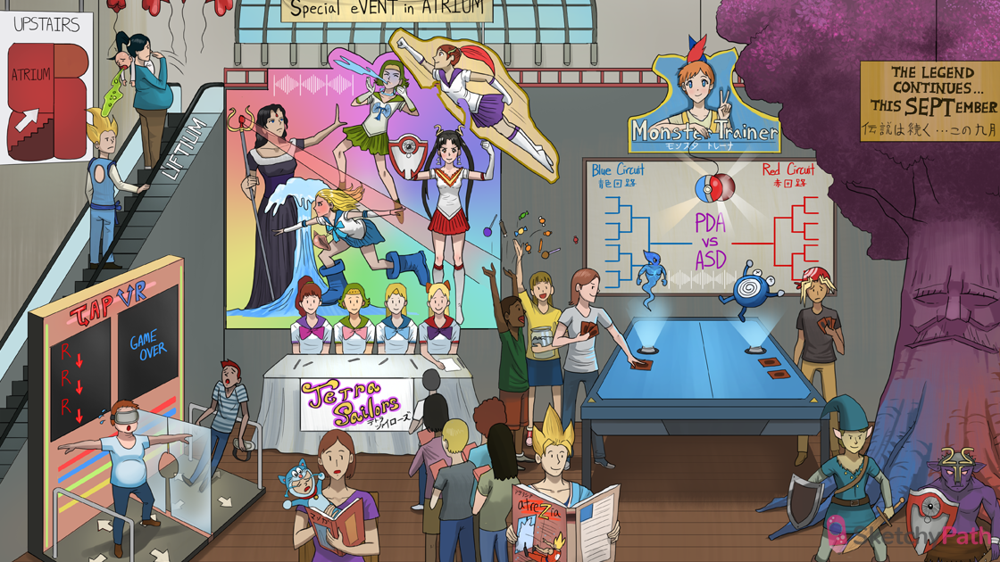

Read manga right to left: right-to-left shunts (e.g. truncus arteriosus, TGV, tricuspid atresia, TOF, TAPVR)
Blue baby: right-to-left shunts cause early onset cyanosis
Large purple trunk: truncus arteriosus (right-to-left shunt)
Large V shirt: truncus arteriosus often occurs with VSD
“September”: failure of septation causes truncus arteriosus (no division between aorta and pulmonary trunk)
Neural crest shield: failure of neural crest cell migration causes truncus arteriosus
“22” and “11” helmet: failure of neural crest cell migration (e.g. truncus arteriosus) is associated with 22q11 deletion syndromes (e.g. DiGeorge)
Monster trainer station: transposition of the great vessels (TGV - a right-to-left shunt)
Independent right and left circuits: TGV results in an independent deoxygenated systemic circuit and oxygenated pulmonary circuit (aorta and pulmonary artery are transposed)
“PDA VS ASD”: TGV is incompatible with life without a VSD, ASD, or PDA (left-to-right shunts)
Murmur between the circuits: TGV can present with a murmur form an associated left-to-right shunt
Red ponytail in front of blue: with TGV, the aorta is anterior to the pulmonary artery (on cardiac echo)
Monster ball on a string: with TGV, the cardiac silhouette looks like an “egg on a string” on CXR
Throwing up candy: diabetes in the mother is a risk factor for TGV
Defeated spiral monster: failure of the aorticopulmonary septum to spiral results in TGV
Tricuspid “Z” warrior: tricuspid atresia (right-to-left shunt)
Hole in septal window: tricuspid atresia is often associated with an ASD
“Tetra Sailors”: tetralogy of Fallot (Right-t-left shunt)
Earth sailor with constricted pulmonary trees: pulmonary valve stenosis (feature of TOF)
Earth sailor’s blue face: pulmonary valve stenosis causes cyanosis (the degree of stenosis dictates the severity of disease)
Water sailor’s conch shell: TOF is associated with right ventricular hypertrophy (concentric) due to pressure overload
Water sailor’s large boots: right ventricular hypertrophy (feature of TOF) seen on CXR as a “boot-shaped heart”
Fire sailor’s big V neck: ventricular septal defect (feature of TOF)
Air sailor’s red ponytail flying overhead: overriding aorta (feature of TOF)
Neural crest shield: failure of neural crest cell migration causes TOF
“22” and “11” jewelry: failure of neural crest cell migration (e.g. TOF) is associated with 22q11 deletion syndromes (e.g. DiGeorge)
Systolic spray: TOF can present with a harsh systolic crescendo/decrescendo murmur (due to pulmonary valve stenosis)
Evil choking spell: TOF can present with hypercapnic spells (“tet spells”)
Squatting to dodge spell: squatting relieves symptoms during a hypercapnic spell
Geyser shooting upward: squatting increases SVR forcing more blood upward into the pulmonary circulation
“Tap VR”: total anomalous pulmonary venous return (TAPVR - right-to-left shunt)
Right, down, right, down...: in TAPVR, the pulmonary veins drain back into the right heart (with the systemic circulation)
Dilated right tap dancer: TAPVR causes a dilated right atrium and ventricle
Hole in septal window: in TAPVR, an ASD allows some oxygenated to enter the systemic circulation
“Upstairs”: Ebstein’s anomaly can present in infancy with cyanosis
Large atrium map: Ebstein’s anomaly is associated with dilation of the right atrium
“Event in atrium”: the abnormal dilation of the right atrium and inferior displacement of the tricuspid valve into the ventricle is termed “atrialization” of the right ventricle
Regurgitation on tricuspid wig: Ebstein’s anomaly is associated with a malformed tricuspid valve and tricuspid regurg
Failing heart balloon: Ebstein’s anomaly is associated with right sided heart failure (due to severe tricuspid regurg)
Pregnant mother on “lift-ium”: Ebstein’s anomaly is caused by lithium exposure in utero